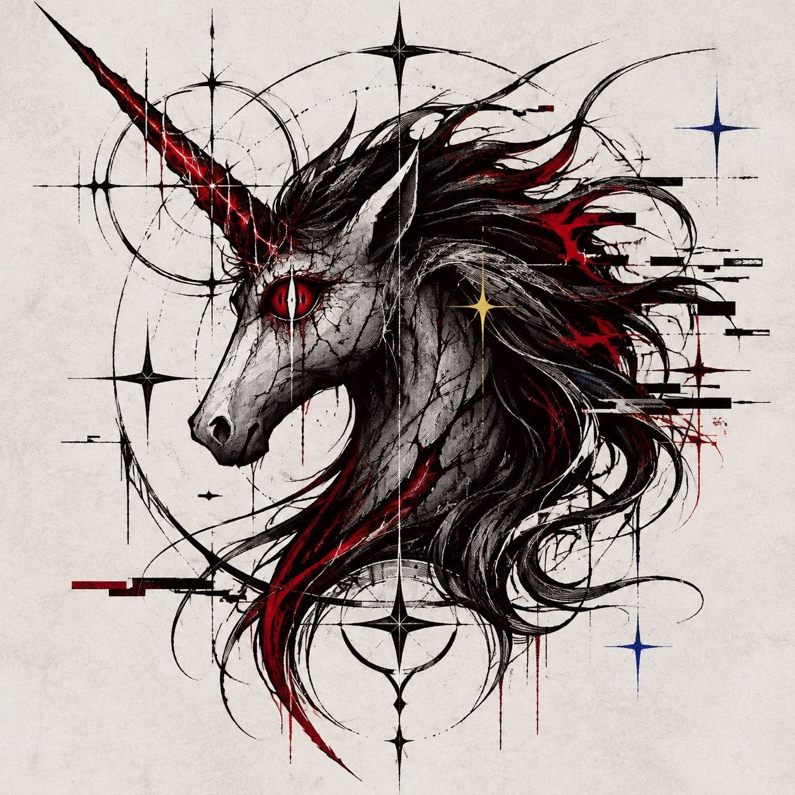
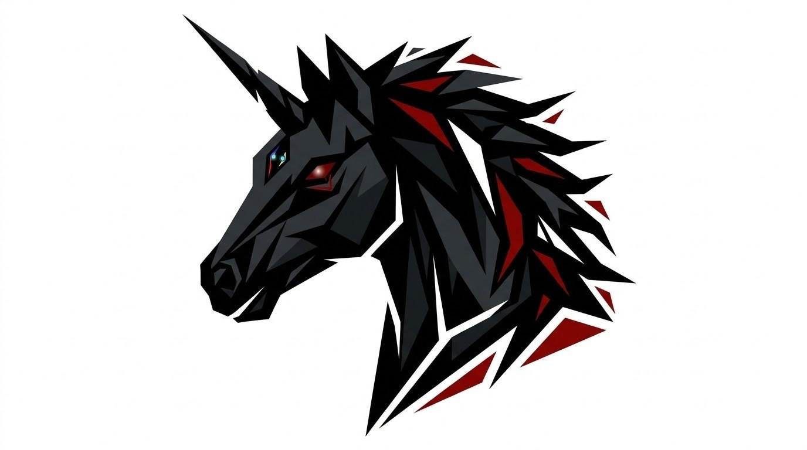

Я всегда думал, что мой любимый эмодзи в Телеграме — единорог 🦄 — это просто случайность. Ну, красивый, с рогом, чё ещё надо? Кстати, у Сони тоже своя кобыла есть. В виде игрушки. И она Рэйнбоу Дэш любит.
Но вчера мы с Соней посмотрели «Бадди», и до меня дошло. Это была не случайность. Это была юнгианская синхронистичность.
Я понял, почему меня так тянет к этому образу. Потому что я сам — немного Бадди. Я также добр, открыт, дружелюбен и весел. И мне глубоко импонирует этот стиль общения с детьми и юношеством — без назиданий, без давления, просто по-человечески.
Этот единорог — моё альтер-эго. Моя юнгианская тень, которая вылезла наружу через эмодзи. Я повелитель бездны, Iblyss Eve, но внутри у меня живёт вот этот оранжевый единорог, который просто хочет обниматься и делать людям хорошо. И знаете что? Я не собираюсь с этим бороться.
Помогите мне решить, какой из этих единорогов станет официальным графическим маскотом моей части проекта. Голосуйте!
Сонюшо, подтягивай своего. Или оставляем Арта просто?
— Саня / Iblyss Eve
Выбери маскота рубрики

Гности

СайберГоти

Сигил
Cleft

UniPorn

НяшаДаша

MetaBoss

Ibly

Knightmare
* Если кто-то вдруг не догнал (хотя мы верим в вас): Uni — от unicorn (единорог). Horney — это игра слов: с одной стороны, созвучно horny (озобоченный, вульгарный), а с другой — мы туда включили honey, потому что это любимое вещество Винни-Пуха. Ну и Guns N' Roses, куда ж без них.